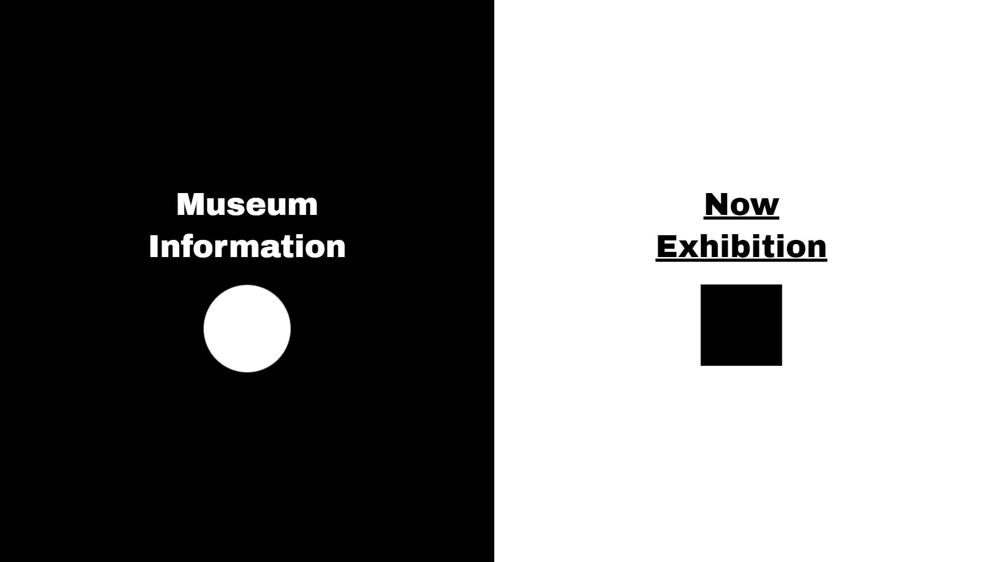

BACK Ilmin Museum type: web site 일민미술관의 웹페이지 리뉴얼 작업입니다. 컨셉 기획과 웹페이지 디자인, 구현까지의 작업을 진행하였습니다. 일민 미술관의 초성을 심볼로 이용하며 현재 전시페이지와 미술관 소개 페이지를 나눠 구성하였습니다. tool : Visual Studio Code / Adobe Photoshop 2020.05.16  werk 03 Feel Free